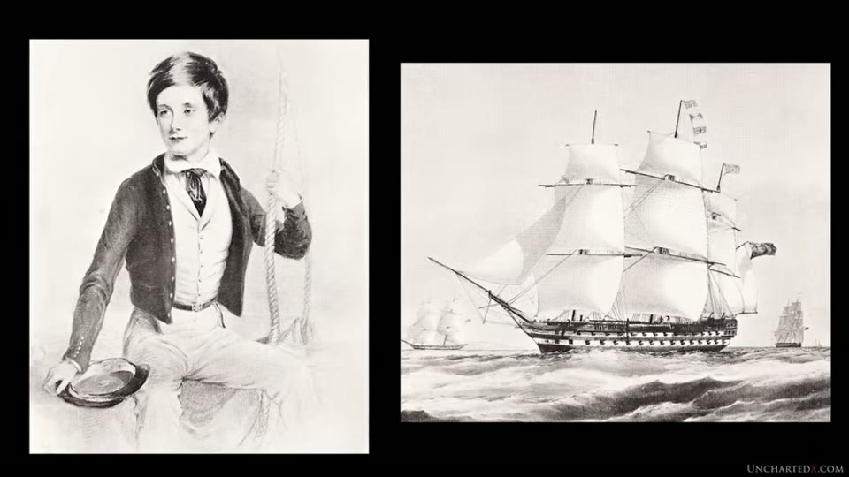
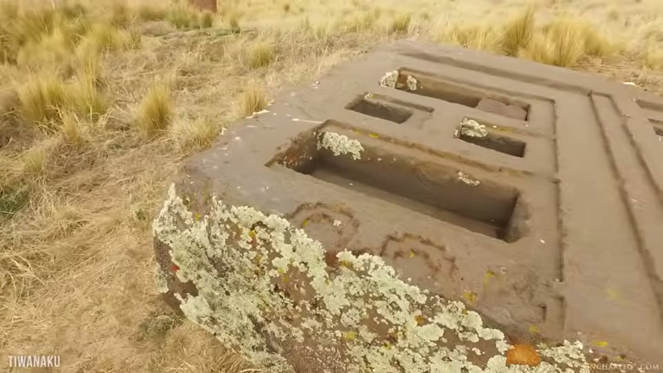
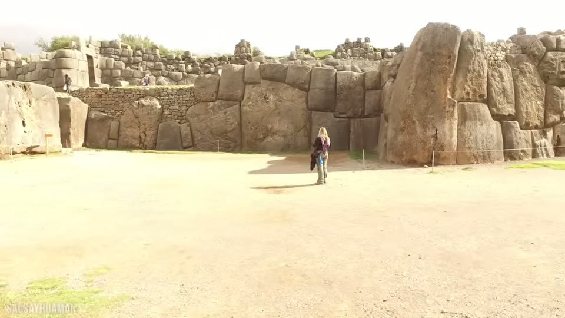
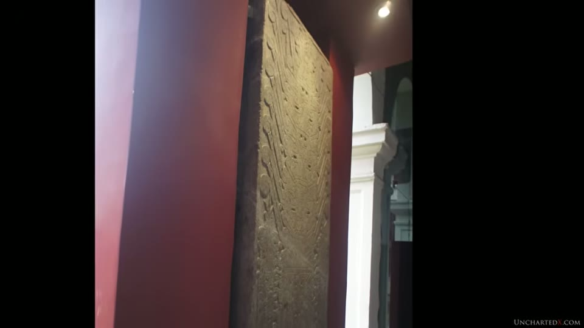

UnchartedX
South America's Megalithic Age!
Ben · 53 min · watch on YouTube · summarised 2026-09-30
An unusual entry because almost none of it is Ben's. He reads chapter two of Sir Clements Markham's The Incas of Peru (1912) close to in full, set to his own footage of the places and objects Markham describes, and adds two observations of his own at the end.
The framing at the top 01:02–02:38: textbooks attribute the whole of this architecture to the Inca, and where the disparity in workmanship is unavoidable the fine work is relabelled Imperial Inca or described as an "organic style" encompassing everything. Ben's claim about that is historical rather than technical — that the insistence "is also a modern phenomenon, one that has only risen to prominence in the last 50 years or so", and that earlier academics and travellers were more willing to leave the question open.
Who Markham was
Born in England in 1830; Royal Navy; later secretary and then president of the Royal Geographical Society; best known for reviving British interest in Antarctic exploration, with Mount Markham named after him. He researched the Andes for some sixty years, travelled there himself, learned Quechua, and corresponded with Peruvian scholars for decades. He died in 1916 03:09–04:41.
He is not a stranger to this knowledge base: the caption on Hiram Bingham's photograph of the Temple of the Three Windows, quoted in the Sacsayhuamán part one entry, ends "(See Markham's 'Incas of Peru,' Chapter IV.)"
Two of his books are used. From Cuzco and Lima (1856) Ben reads the introduction, in which Markham complains that historians have lavished volumes on the conquistadors while "the deeply interesting history of its anterior civilization has been comparatively neglected", and that those who wrote of the Incas had "never themselves gazed with rapture on the towering Andes" 05:12–08:19.
From The Incas of Peru (1912), his last completed book, Ben reads chapter one, The Tellers of the Story — a survey of the sources, which were soldiers, lawyers, priests, indigenous Inca and mestizos. Garcilaso de la Vega, whom Markham calls "the Inca Garcilaso", was himself a mestizo. Markham notes that many manuscripts survive only in fragments and that "discrimination is called for" between witnesses "biased by prejudices which tend to obscure the truth" 10:57–13:36.

The author whose 1912 chapter the video reads out.
The list of kings
Chapter three, summarised 14:13–17:49. A list of a hundred kings of Peru appears in the writings of Fernando Montesinos, in Peru from 1629 to 1642. Markham does not defend Montesinos — he calls him "credulous and uncritical", writing a century after the conquest when everyone who remembered Inca times had died, and says "little credence has therefore been given to the list hitherto."
The rehabilitation is somebody else's. Dr González de la Rosa argued that Montesinos merely copied a list already well known, compiled almost certainly by Blas Valera while learned men of Inca times were still alive — Valera being the son of an Indian mother, with Quechua as his first language. On that reading, Markham writes, "the list therefore comes to us on the highest authority as a genuine tradition of the learned men of Inca times."
The list is said to derive from quipu records kept by the amautas and quipucamayocs. Ben explains the quipu as a knotted-cord mnemonic system rather than a script, and the amautas as record-keepers and teachers.
Markham's arithmetic, and the conditional in it is his: the reign lengths average 25 to 27 years, "it is true that if the whole represents a succession of fathers and sons it would take us back to 950 BC." Ben's comparison: roughly 1,300 years earlier than the accepted start of the Inca around 1280.
The megalithic age, read out
Chapter two, and Ben says it is what made him stop work on another video and make this one 19:21–45:22.
The country first. The cordilleras unite at the knot of Vilcanota at 14°28' south, then separate; between them a plateau of 13,000 to 14,000 feet with Lake Titicaca at its centre, the lake surface at 12,508 feet and "formerly much larger". Llamas, alpacas and vicuñas live on coarse ichu grass; a shrub called tola serves as firewood; quinoa alone can be raised at the higher elevations and "by itself is insufficient to maintain human life". On the plateau — the Collao — potatoes and oca are the staple, "cereals will not ripen", and green barley is only fodder. Markham's conclusion: "such a region is only capable of sustaining a scanty population of hardy mountaineers and labourers."
Then the problem. "The mystery consists in the existence of ruins of a great city on the southern side of the lake, the builders being entirely unknown." His figures: one stone 36 feet long by 7, weighing 170 tons; another 26 feet by 16 by 6. "Apart from the monoliths of ancient Egypt there is nothing to equal this in any other part of the world."
What he reads from that: a dense population, an organised government, a large area under cultivation, arrangements for conveying supplies, and "an organization combining skill and intelligence with power and administrative ability."
The workmanship, which he ranks second only to the size 24:00–25:04: "the lines are accurately straight, the angles correctly drawn, the surfaces level"; upright monoliths carry mortises and projecting ledges to retain the horizontal slabs; the carvings are complicated and well arranged. He picks out the angle joins of a stone conduit, a window frame with nine apertures all in one piece, and numerous niches and mouldings. He also notes that "flights of stone steps have recently been discovered, for the ancient city, now several miles from the lake, was once upon its borders."

The cut recesses and channels Markham ranks second only to the size of the stones.
A 16th-century claim at several removes. From Calancha's history of the Jesuits in Peru, via a manuscript dictated by an Indian quipu-reader named Qatari, living at Cochapampa at the end of the sixteenth century, and given to Calancha by Bartolomé Cervantes: "no judgment can be formed of the size of the ruined city because nearly all was built underground." Markham adds that Professor Nestler of Prague went to Tiwanaku to investigate by the light of that account.
The Sun Gate, described in 1912
Markham calls it the monolithic doorway 25:35–30:18. Two observations before the carving: it is fractured, "probably by an earthquake", and the lower part had not been excavated, so "it is not known whether the two sides are connected below or separate."
Ben notes that the gate was moved from its original location, reassembled and mounted on a modern foundation in 1908, and still stands there. The images he uses are plates from his own copies of Arthur Posnansky's volumes — which places this video in the middle of a longer arc: the first volume arrives unread at the end of the 2019 introduction, and the 2022 dating video is built entirely from them.
Markham's description is a catalogue, and it is the kind of thing that can be checked against the object 27:40–29:48:
- a central square of 17½ inches carrying the principal figure
- 22 rays issuing from its head, ending variously in circles and animal heads — he allows they could be sun rays but thinks the varied shapes point to some other symbolic meaning
- two sceptres, identical below the hands and different above: the right with five joints, the left divided in two and ending in birds' heads
- below the belt, a band with a hanging fringe of six human heads
- 48 kneeling figures flanking it — 16 bird-headed and 32 human-headed, all winged, all crowned, all holding sceptres. The bird-headed worshippers carry the sceptre of the central figure's left hand, the human-headed that of its right; the bird-headed have bands terminating in fish heads, the human-headed in birds' heads
His conclusion: "it is difficult to avoid the conclusion that the central figure is intended to represent the deity having jurisdiction over all human beings on the one hand and over the animal creation on the other." And his verdict on the art, which is not flattering: "there is no sign of sculpture nor of any knowledge of proportion in designing a human figure, but at the same time there are indications of a very remarkable skill and taste in the masonic art."

The monolithic doorway Markham catalogues, and the fracture he notes.
The mystery restated, which is the sentence the chapter turns on: "a vast city… was built in a region where corn will not ripen, and which could not possibly support a dense population."
He adds that the Inca "were absolutely ignorant of the origin and history of these edifices", that the statues gave rise to a myth of people turned to stone for disobedience, and that the name Tiahuanaco is modern — from an Inca comparing a messenger's speed to a guanaco's: "tiahua, guanaco", be seated. And that the ruins were in much the same state when the Spanish arrived: Acosta measured the stones and called them very ancient, Cieza de León described two gigantic weathered statues showing great antiquity, and a schoolfellow of Garcilaso called them very ancient.
Agriculture and animals as a clock
Markham's second line of argument, and it does not touch stone at all 31:51–33:57.
Maize has been cultivated so long that "it is not even certainly known from what wild plant the original maize was derived."
The potato he treats as the better evidence because the wild plant is known: a tuber "about the size of a filbert, which has scarcely increased in size after a century of careful cultivation" — against which the Andean people produced "excellent potatoes of several kinds, for each of which they had a name." The same, he says, for oca and quinoa. No plant of any kind appears on screen through the passage; it runs over footage of Tiwanaku.
The animals. "There is no wild llama" — the huanaco and vicuña are different animals — and domesticated llamas come in various colours while wild huanacos are uniform. "There is no wild alpaca, and the tame animal is dependent on man for the performance of most of its functions. It must have taken ages to bring the silken fleeces to such perfection."
How far the empire reached
Markham's survey of comparable work 33:57–42:18. On origins he agrees with Dr Brinton that "the culture of the Indian race is an indigenous growth, wholly self-developed, and owing none of its germs to any other races", and cites Squier for Peru and Maudslay for Central America as reaching the same conclusion. The direction of movement, he says, is the one point on which the sources agree: from the south. Cieza de León, Betanzos, Sarmiento, Molina and Montesinos all report it, and Garcilaso once described himself as an "antarctic Indian."
The comparable sites:
| where | what |
|---|---|
| Cusco | a cyclopean building in the Calle del Triunfo with the huge monolith known as the stone of twelve corners |
| Ollantaytambo | parts of the remains, and the Inca Misana and Ñusta Tiana hewn from solid rock |
| Sacsayhuamán | the fortress: three parallel walls 330 yards long, each with 21 salient and retiring angles, outer stones of 14 feet by 12 and 10 by 6 |
| Chavín, Chachapoyas | cyclopean work |
| Concacha near Abancay | a limestone sacrificial stone about 20 feet by 14 by 12, carved in channels for leading away liquids |
On the fortress his position is explicit: "its origin is as unknown as that of the Tiwanaku ruins. The Incas knew nothing." He allows that Garcilaso names Inca architects for towers, walls and two gates — "but these were later defences built within the great cyclopean fortress. The outer lines must be attributed to the megalithic age."

The fortress Markham attributes to the megalithic age rather than the Inca.
The Chavín stone
Found around 1840 in the parish of Chavín de Huántar, province of Huari; it had fallen from the ruins above, but Markham judges it "probably once part of a much more ancient edifice, afterwards used to adorn the more recent Inca fortress." Taken to Lima in 1874 by government order, where it can still be seen.
His comparison with the Sun Gate is the closest thing in the chapter to a dating argument from style: the same deity grasping a sceptre in each hand, the same bands ending in heads or circles. At Tiwanaku "the artists avoided all curves, preferring straight lines and correctly drawn rectangles" and everything appears to mean something; on the Chavín stone "the conception is more confused, and there is much that is more ornate but apparently conventional and unmeaning." His conclusion: "the work of the same people, with the same cult, the same art, the same traditions, but with an interval of perhaps a century or two between them."
Ben adds one thing of his own here: that he understands requests have been made to measure the flatness of that stone with metrology equipment and that no permission has been granted — "at least as far as I know" 39:10–39:42.

The carved stone Markham compares with the Sun Gate, and its flat surface.
Markham's own answer, and the condition he puts on it
The last section, and it is the reason the chapter is worth reading 42:18–44:52. Having built the problem — a great city where corn will not ripen — Markham looks for a way out, and the one he finds is geological. He notes that the Andes are "comparatively speaking… very modern", absent in the Jurassic and the Cretaceous, and raised slowly.
His evidence is two sets of bones:
- mastodon remains at Ulloma in Bolivia, now 13,000 feet above the sea — "such an animal could not have existed at such an elevation"
- skeletons of gigantic anteaters in the ravines of the Tarapacá desert — animals of dense forest, in a place now arid
His mechanism: the height of the Andes wrings the moisture out of the trade wind, which is what makes Tarapacá a desert; when the range was lower the wind carried its moisture across. So when those animals lived, the Andes were "some two or three thousands of feet lower than they are now", maize would ripen in the Titicaca basin, and the site could feed its builders.
And then the sentence Ben leaves standing without comment:
"If the megalithic builders were living under these conditions, the problem is solved. If this is geologically impossible, the mystery remains unexplained."
What Ben adds
Two things, at the end 45:22–47:58.
The extinctions. Markham reached for slow uplift because he had nothing else. The mastodons and giant anteaters he cites went extinct around the Younger Dryas, which was unknown in 1912. Ben's alternative is "traumatic and violent climate change" at that event rather than a thousands-of-feet change in elevation, and he points to his own earlier video on the Younger Dryas in South America — the same event examined from the other side of the field in the Younger Dryas comet entry.
The attitude. Markham, after sixty years, "still acknowledges that none of his conclusions are certain". Ben's comparison is Flinders Petrie on Egypt, and his complaint is about the present: that declaring the mysteries solved is "quite perplexing" when the evidence is mixed, and that the field "might be better served by acknowledging that perhaps there is more to learn here."
He also reports, in passing, a 2020 find he offers as a general point about dates moving: a stone tool from an Oregon dig, recovered beneath an undisturbed Mount St Helens ash layer dated to 15,800 years ago, carrying blood identified as likely from an extinct bison 18:52–19:21.
What you can check yourself
- Markham's two books. Cuzco and Lima (1856) and The Incas of Peru (1912) are both out of copyright and readable; the chapters are named and the passages are read close to in full.
- The Sun Gate catalogue. 22 rays, 48 attendant figures split 16 bird-headed and 32 human-headed, six heads on the belt fringe, a 17½-inch central square. Every one of those is a counting exercise against a photograph.
- Whether the lower part of the gate has since been excavated, which Markham says it had not been in 1912.
- The Sacsayhuamán figures: three walls, 330 yards, 21 angles each.
- The stone of twelve corners, in the Calle del Triunfo in Cusco.
- The Chavín stone, moved to Lima in 1874 and, Ben says, still on display there.
- The wild potato, and whether it is the size Markham describes.
- Montesinos, Blas Valera and González de la Rosa — the chain the king list depends on, all published.
- Mastodon remains at Ulloma and anteater skeletons in Tarapacá, which are the empirical half of Markham's geological argument.
What the video does not settle
- Almost none of it is current. The substance is a 1912 chapter, and Markham's figures, attributions and geology are presented as he wrote them. Nothing is re-measured, and no modern assessment of his conclusions appears.
- Markham's own answer is conditional and he says so. "If this is geologically impossible, the mystery remains unexplained." The video quotes that and does not resolve it.
- Ben's alternative is asserted, not worked through. Substituting Younger Dryas climate change for a 2,000–3,000-foot elevation change is offered in a sentence; no figures, no mechanism for how the Titicaca basin would have fed a city, and no reconciliation with Markham's own reasoning about the trade wind.
- The king list rests on a chain of attributions, not on a document. Montesinos is described by Markham himself as credulous and uncritical; the case for taking the list seriously is González de la Rosa's argument that he copied Blas Valera. No manuscript is produced.
- The 950 BC date is conditional in Markham's text — "if the whole represents a succession of fathers and sons" — and the video does not test that assumption.
- The underground-city claim is at four removes: Qatari to a manuscript, to Cervantes, to Calancha, to Markham. Nothing has been excavated to confirm it in the video.
- Brinton, Squier and Maudslay are named without their works, and their agreement is reported rather than shown.
- The metrology claim about the Chavín stone is unsourced and hedged by Ben himself — "at least as far as I know". No requesting party, date or refusing authority is named.
- "Only risen to prominence in the last 50 years or so" is asserted about the modern consensus with no citation or survey behind it.
- The Oregon stone tool has no paper, site or team named, and is used as a general illustration rather than as evidence about South America.
- Markham's judgement on the art is reported without comment. He says there is no knowledge of proportion in the human figure while praising the masonry; the video does not engage with what that would mean for the argument.
- The agricultural evidence is spoken over unrelated footage. The wild potato, the oca, the quinoa, the llama and the alpaca are Markham's clock for the antiquity of the culture, and none of them is shown.
- The Sun Gate catalogue is read over the gate but not against it. The video shows the gateway and shows Posnansky's drawn plate of the frieze; at no point is a figure counted, pointed at or marked on screen while Markham's numbers are read out.
Names
The 2020 caption track is the unpunctuated kind and the density of 19th-century proper nouns makes this the worst-affected entry in the corpus for name recovery. Reconstructions flagged:
| written here | as the captions give it |
|---|---|
| Clements Markham | "Clements Marcum", "Markham" |
| Fernando Montesinos | "Fernando Montesinos" |
| Blas Valera | "Blas Valera", "valera" |
| González de la Rosa | "Gonzales dela Rosa" |
| amautas, quipucamayocs | "Emmaus", "amount us", "quipu cami ox" |
| Vilcanota | "vilcanota" |
| Illimani, Illampu, Aconcagua, Huascarán | "Alam Ani", "Alam Phu", "except hakuna Gua", "horse Karen" |
| Collao | "Kaleo" |
| Pucara | "Pokhara" |
| tola, oca, ichu, viscacha | "Toula", "ochre", "you chew", "vus charkha" |
| Calancha | "Alevis", "a lever" |
| Qatari | "hary a creepy komoi AK", "Qatari" |
| Cochapampa | "cojo pumpa" |
| Bartolomé Cervantes | "Bartolome Cervantes" |
| Cieza de León | "Piazza de Lyonne", "Piazza de Lyon" |
| Sarmiento | "Sokka Mayhew" |
| Chachapoyas | "chaka pious", "Chuck opposed" |
| Concacha, Abancay | "Conchata", "con ChaCha", "Abin k" |
| Calle del Triunfo | "Calais de Triunfo" |
| Ñusta Tiana | "newest tatyana" |
| Ulloma | "Aloma" |
| Tarapacá | "Tarapaca" |
| Marañón | "marin on", "marinum" |
| Brinton | "Brenton" |
| Maudslay | "Maudsley" |
Two are marked uncertain even after reconstruction. The peaks listed by Markham arrive so badly mangled — "except hakuna Gua and horse Karen" — that Aconcagua and Huascarán are inferred from the phrase "the loftiest measured peaks of the new world" rather than recognised. And "Sokka Mayhew" is read as Sarmiento on the strength of the company it keeps in a list of chroniclers; it has not been confirmed.